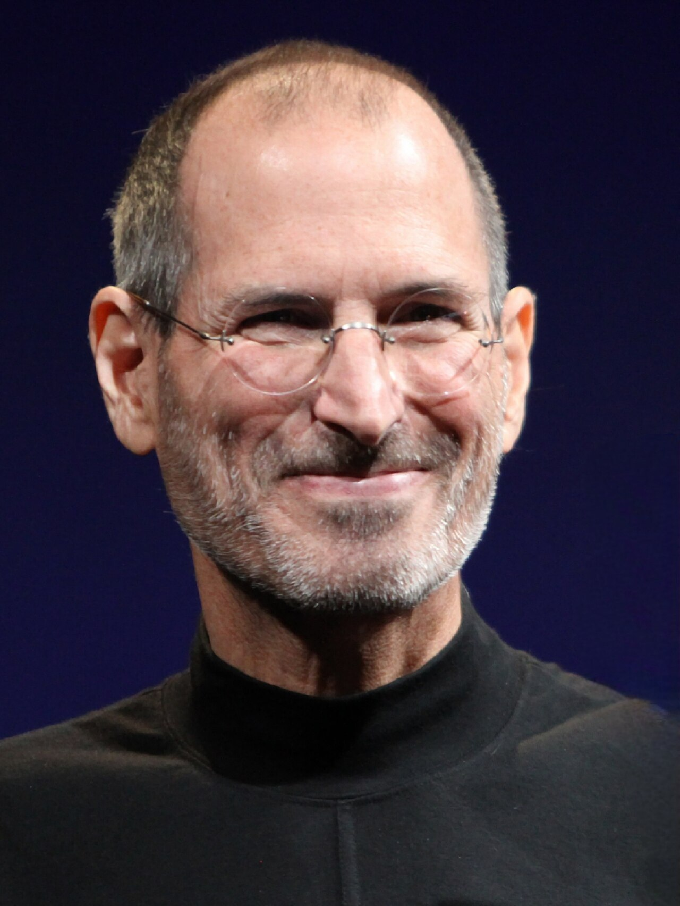
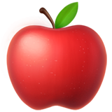
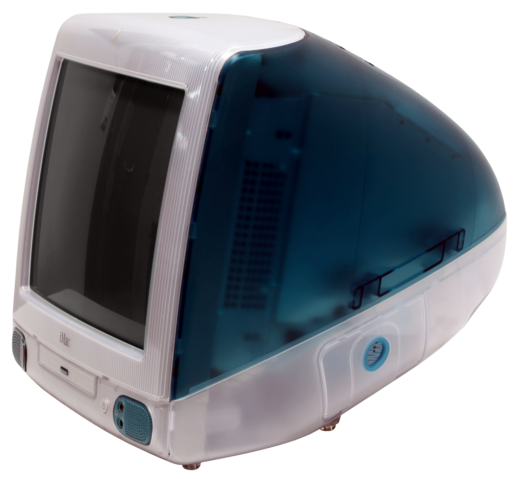
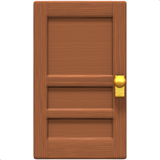
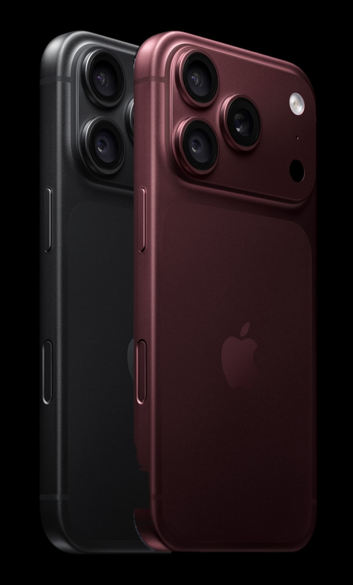
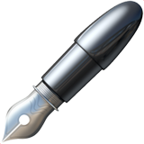

Apple fired its own
founder. 12 years later,
he came back to save it.

In 1997, Apple lost
$1 billion.
Then he came back.

Most people don’t
know Steve Jobs was
fired from Apple.

This computer
saved Apple.

Getting fired was
the best thing that
happened to him.
His own words, at Stanford in 2005.

It all started with
a man Apple fired.
12 years later, he came back and saved the company. Here’s the story.
Steve Jobs.
It started in
a garage.
He dropped out of college after one semester, but kept sitting in on a calligraphy class. Years later, it shaped the Mac’s fonts. In 1976 he started Apple with Steve Wozniak in his parents’ garage.

 Macintosh, 1984
Macintosh, 1984Rich at 25.
The Mac at 28.
Apple went public in 1980 and made him worth over $200 million. In 1984 he launched the Macintosh.
Pushed out of
his own company.
After a boardroom fight with CEO John Sculley, the board took his side against Jobs. He left Apple at 30.

The comeback.
Apple bought NeXT for about $400 million, and Jobs came back. Apple lost $1.04 billion that year. He cut the product line, took a $150 million investment from Microsoft and launched the iMac in 1998.

Then he changed
everything. Again.
2007iPhone 2010iPad
2010iPadAnd Disney bought Pixar in 2006 for $7.4 billion, making Jobs its largest individual shareholder.

From −$1 billion
to $5 trillion.
Apple briefly topped $5 trillion on July 28, 2026, only the second company ever to do it. Sources: Reuters, SlashGear.
“Stay hungry.
Stay foolish.”
 Save
Save Share
Share Follow
Follow